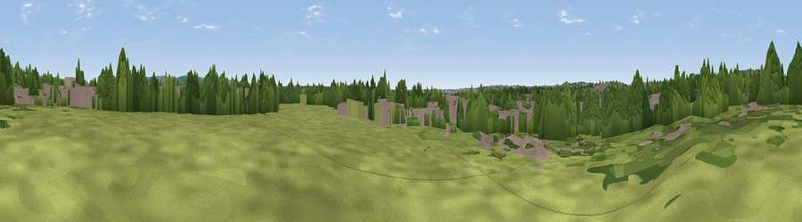

Viewpoint near Boughton Lees
#43117 in England · top 86% of its area beats it · near Boughton LeesWhere it is
The exact computed spot (TR 02195 44865). Click the marker for map links.
The view, rendered

A 360° render of this exact spot computed from the terrain model, tree cover and land cover — summer colours, afternoon light, calibrated against photographs of famous viewpoints. Real trees, hedges and buildings will differ in detail.
The panorama
Grey silhouette: terrain skyline in each direction (720 bearings, Earth curvature and refraction included). Dashed green: skyline with trees (+15 m) and buildings (+8 m) as obstacles. Blue strip: how far the ground is visible on each bearing.
Where the view opens
Wedge length = distance to the farthest visible ground on that bearing (vegetation-aware). Rings at 10, 25 and 50 km.
What fills the view
45% woodland · 23% built-up · 19% grassland · 12% cropland
Angular shares of the visible panorama (visual magnitude), not map area. Landscape diversity 0.55 (0–1 Shannon).
Key numbers
More beautiful places nearby
The staircase of upgrades: each row has a higher view potential than everything closer. Driving times are estimates from straight-line distance, calibrated against real road routing — check an actual route before setting out.
| Place | Direction | Drive | Score |
|---|---|---|---|
| Viewpoint near Boughton Aluph | N · 4 km | ~9 min | 66.7 |
| Viewpoint near Westwell | NW · 5 km | ~11 min | 72.2 |
| Viewpoint near Lympne | SE · 12 km | ~23 min | 72.6 |
| Tolsford Hill | ESE · 15 km | ~27 min | 77.9 |
| Viewpoint near Capel-le-Ferne | ESE · 23 km | ~38 min | 80.2 |
| Viewpoint near Willingdon | SW · 61 km | ~84 min | 83.4 |
| Wilmington Hill | SW · 63 km | ~86 min | 85.4 |
| Viewpoint near Alciston | SW · 66 km | ~89 min | 86.8 |
51.16728, 0.89072 · source: osm peak · position refined by local search. Computed location — check access rights before visiting.